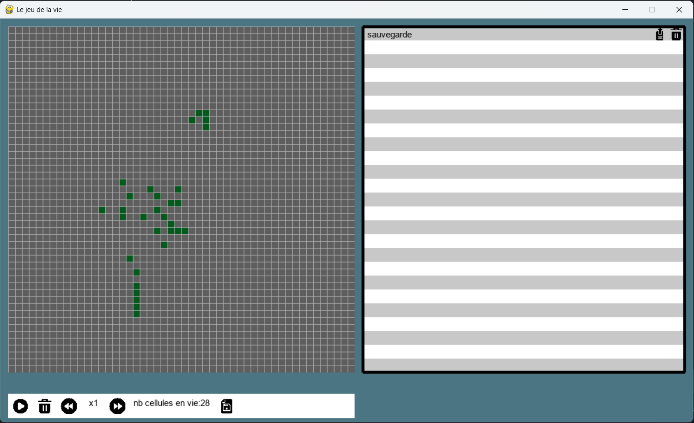
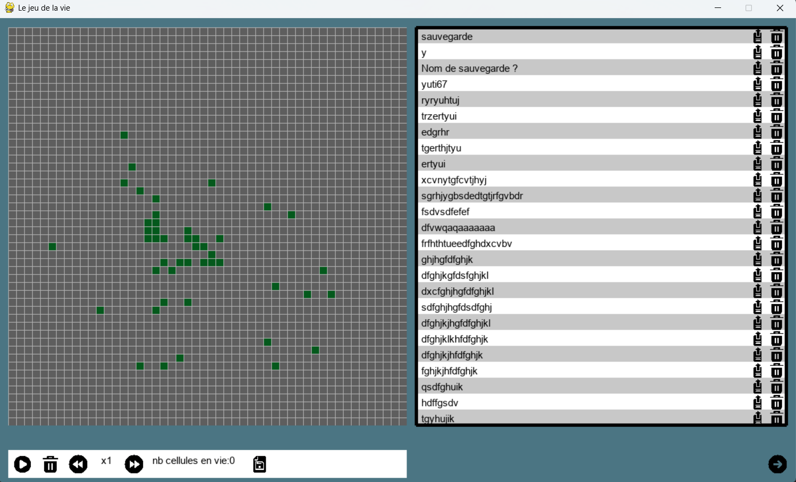
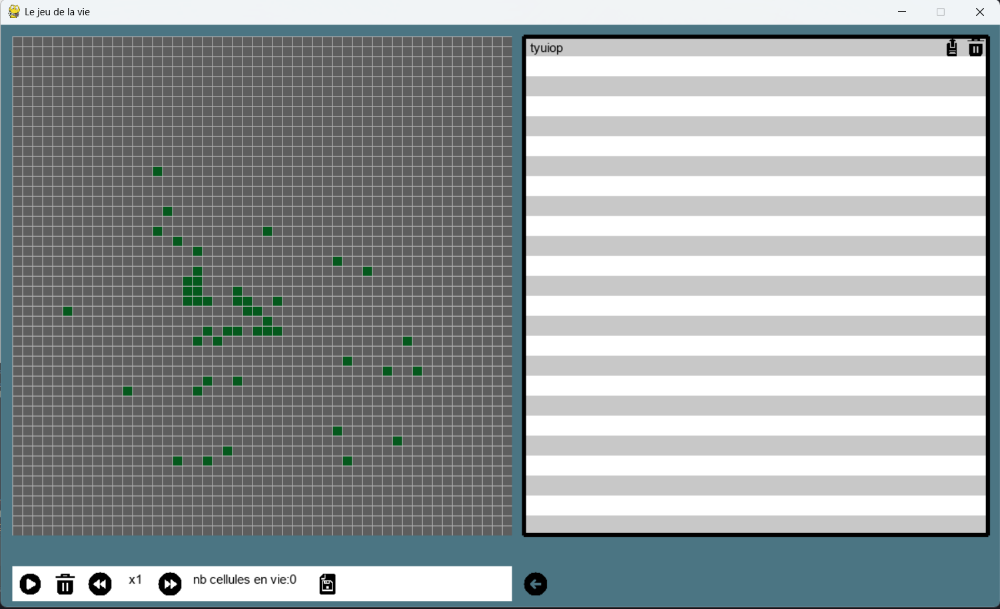
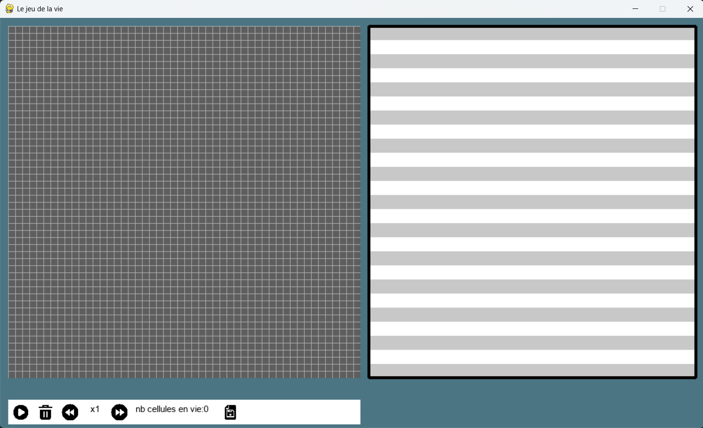

En terminale, j’ai développé une version du Jeu de la vie en python avec le module pygame. Ce projet permet non seulement de simuler et jouer au Jeu de la vie, mais aussi d’interagir avec la simulation grâce à plusieurs fonctionnalités : mise en pause, modification de la vitesse d’exécution, sauvegarde de configurations de cellules, rechargement de dispositions enregistrées ainsi que leur suppression.

Les objectifs étaient comprendre et implémenter les règles du Jeu de la vie, concevoir une interface interactive en terminal, développer des fonctionnalités de gestion et de persistance de données, travailler efficacement en équipe sur un projet informatique.
Le projet a été réalisé en groupe de deux, ce qui a nécessité une répartition des tâches, une communication régulière et une coordination sur l’architecture du programme afin d’assurer la cohérence du développement.



Programmation algorithmique, Manipulation de structures de données, Gestion des entrées utilisateur, Travail collaboratif, Débogage et tests, Gestion de fichiers.
Grâce à ce projet, j’ai développé des compétences en conception de programmes interactifs, en gestion de données persistantes via des fichiers, en organisation du code ainsi qu’en travail collaboratif. J’ai également renforcé ma capacité à concevoir des fonctionnalités répondant à des besoins utilisateurs concrets.